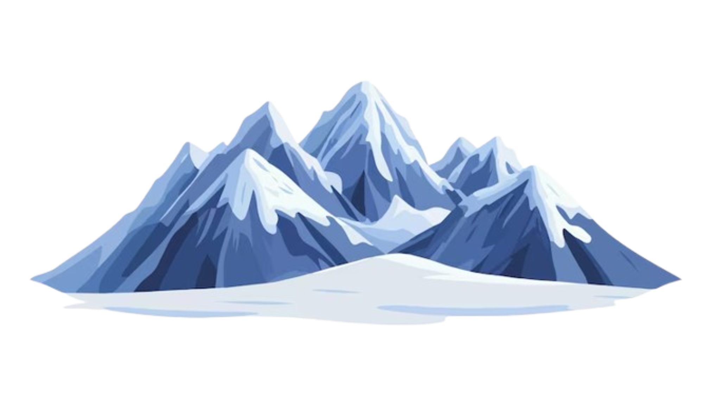

Sports have always been a huge part of my life. Growing up, I was drawn to the thrill of team games like capture the flag, hockey, and basketball. There's something about the teamwork and strategy that I’ve always enjoyed. I also expanded my interests beyond school sports, taking tennis and ping pong lessons, cheerleading and street dance with my friends. Staying active has always been a source of joy for me, whether it’s swimming, running, or even getting my dog to join me for a jog on our walks (she much prefers it over a simple stroll with my mum!). I also love hiking and hillwalking, taking in the fresh air and being outdoors. Looking ahead, I’m excited to join more sports clubs at university, such as hockey or larig, after trying rugby and lacrosse. I’m also eager to pick up horse riding again, something that has always been a passion of mine.
In many ways, gaming has shaped how I imagine the world and what I dream of doing. It started early, playing Minecraft alongside my older brother. That passion grew into a love for simulation and creative games, like designing parks or planning spaces with an eye for detail. Then came Red Dead Redemption 2—its rich, western landscapes and immersive storytelling sparked something new: a fascination with old ranch life in the American outback or rural New Zealand. More than just entertainment, games like these have inspired me to imagine a future where I could help create these kinds of experiences myself—maybe even joining a company like Rockstar Games, where storytelling and world-building happen on a massive, collaborative scale.
Cake Craft – Convincing my friends to join me in this class made my final year of academy
very entertaining and delicious, with the excitement of one day opening a bakery together.
Biology – Facts just seemed to retain themselves in my brain. Biology made more sense to me
than physics and chemistry, despite my fascination with space.
Physical Education – I loved this class, picking up as many extra P.E. lessons as I could
and participating in sports days.
Art – We were left to our own devices to paint and design costumes, with the theory linking
to how people perceive colours, shapes, and design.
Graphic Communication – This was also fun, especially as it incorporated architectural drawings.
Economics – I found this subject interesting, particularly the explanation of how large companies
thrive, monopolize markets, and how trade works abroad.
Committee position – Sub Aqua
Assistant for parent's company
Assisting brother sell games
Macduff Marine Aquarium volunteer
Charlie House volunteer
B.A.R.K.K volunteer shop
Committee member – Rotaract
Student ambassador
Sales assistant – Run4It

Climb the 3 peaks
Take every opportunity to eat pancakes
Do an internship relating to my degree
Change part-time job for more experience
Start a sketchbook
Do the North Coast 500
Go bear grills camping
Take up animal photography
Become good at Overwatch
Dive to 50 metres
Use my French to have a conversation
Go fishing
Perfect a baking recipe